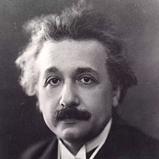

|
Chengxi Deng 邓成玺
I am Chengxi Deng, a student from the School of Honors College, Northwestern Polytechnical University, major in Computer Science and Engineering.
Email /
CV /
Github
|

|
|
Research
I'm interested in Deep Learning,Computer Vision,3D Reconstruction,Low-level Vision.I'm grateful to be supervised by Prof.Jiaqi Yang and Prof.Yuchao Dai.
|
With Prof.Jiaqi Yang
,I mainly work on Single-view and Multi-view Reconstruction.Related codes are
here.
With Prof.Yuchao Dai.
,I mainly work on NeRF-related problems.Related codes are
here.
National Scholarship,Ministry of Education of China,2021
Second-Class Scholarship for Outstanding Merits, NPU ,2021
National Scholarship,Ministry of Education of China,2022
First-Class Scholarship for Outstanding Merits, NPU ,2022
Second Prize in RoboCup Advanced vision 3D-object recognition, Chinese Association of Automation ,2022
Third Prize in RoboCup Advanced vision commercial measurement, Chinese Association of Automation ,2022
Thanks Jon Barron for sharing the website template.
|
|
{kind=link}